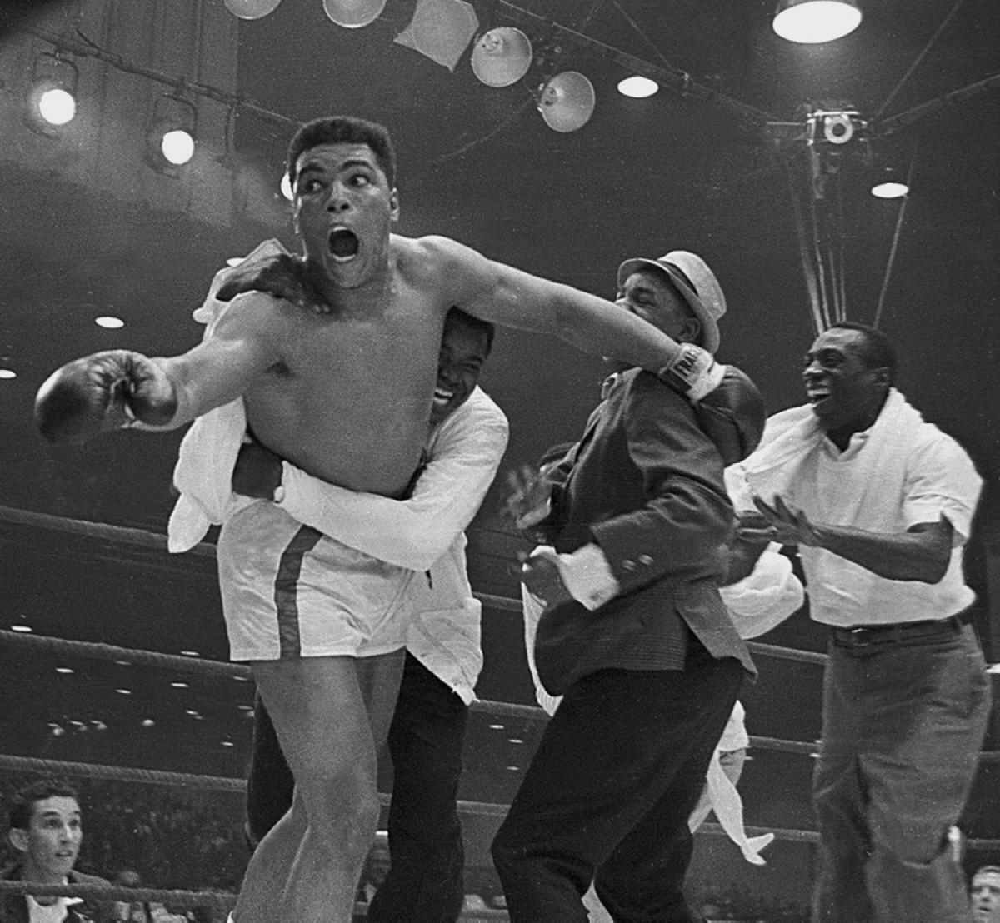

Although Muhammad Ali is mostly known as having been a commemorated heavyweight boxer
and one of the best athletes of the century, he was also
a philanthropist.In other words, he sought to promote human welfare. Moreover, he was an
individual who maintained courage; for example, he fought Parkinson’s disease without any sign of worry.
(A man who once was able to punch so fast later experienced a tremor of hands, slowness of
movement and impaired balance⁄co-ordination.)
Muhammad Ali was born as "Cassius Marcellus Clay Jr." on January 17,1942 in Louisville,Kentucky,United States. Interestingly, many people believe that his boxing career had begun when someone had stole his bicycle. At that moment,he was in tears and was willing to pummel the thief. However,the police offer to whom he had reported the case to had suggested that he should first learn how to fight. From then on, that police offer whose name was "Martin" had become Clay's boxing trainer. A few weeks later, young Muhammad Ali took part in his very first fight, and ended up winning in a split decision . Time began to pass fairly quickly, and Cassius Marcellus Clay Jr. was 18 years old when he had accumulated two national Golden Gloves titles, two Amateur Athletic Union national titles and 100 victories. From the start of his "boxing career" just until he was 18 years old, he had only lost 8 fights. Upon graduation of highschool, still very young in his career, young Muhammad Ali went to Rome and won the light heavyweight gold medal for the United States in the 1960 Summer Olympics. His professional boxing debut occured later that year on October 29,1960 and his senior career started of with a win.
Muhammad Ali had won 19 fights consecutively to get a chance to win his first title. However, he had a top opposition in the heavyweight champion at that time, Sonny Liston. On February 25, 1964, although he was not fancied to win the title, he arrived in Miami Beach, Florida confident that he would win the title. He expressed his confidence by uttering his famous words, "float like a butterfly, sting like a bee". Clay, who started his career by wishing to pummel a bicycle thief, had later become "Boxing Champion of the World" when Liston was not able to answer the bell and come on to the rink at the start of round 7. Immediately following his knowledge of his title victory, Clay had said that he was the greatest. Clearly, he had planned out how he would fight in the mental battle against Sonny Liston. The next day, he surprised all of his fans by telling everyone in a press conference that he had converted to Islam. Later on, on March 6, 1964 Cassius Marcellus Clay Jr. officially took on the name of " Muhammad Ali " after Nation of Islam leader, Elijah Muhammad , bestowed him the name. Ali went on to retain his title another 8 times, extending his run of victories within the rink. In this time period , he had took on Liston again and had beaten him by knockout.With the Vietnam war becoming an issue within the United States, Muhammad Ali was drafted to fight in the war. However, he had refused to fight in the war because it was against his religion. For this reason, he was arrested and was stripped of his boxing license and his heavyweight belt was taken away by the New York State Athletic Commission. He was accused of draft evasion, and so his fame began to drop due to him beginning to be seen as one not respectful to the country. Even in this time of difficulty, where he was sentenced to 5 years at prison and a $10,000 fine, Muhammad Ali had a strong hold on his decision to not take part in the war. Therefore, he spoke out against the Vietnam War on college campuses. As the public started to understand his opinions on the war, he had gotten back the respect from his fans. Following this, the Supreme Court of New York State commanded the New York State Athletic Commission to give his boxing license back to him and overturned the declaration of his guilt ( his accusation ).
After 43 months of banishment, Muhammad Ali had returned to the rink. Upon return,Muhammad Ali won his first fight to Jerry Quarry by a knockout in the third round. With a string of continuous victories, Muhammad Ali had gotten the chance to regain his heavyweight crown in the most awaited boxing match featuring Muhammad Ali and unbeated Joe Frazier which was dubbed " Fight of the Century ". Muhammad Ali fell short of lifting the crown after an unanimous decision that declared Joe Frazier as the winner. Muhammad Ali experienced his first defeat of his professional career at this moment in time. Joe Frazier was to face Muhammad Ali again on October 1 , 1975 in a title match, and Joe Frazier lost as he was unable to answer the bell. As it was evident that Muhammad Ali was reaching the end of his career , he had accumulated 3 more losses before he had retired. These losses came against Leon Spinks, Larry Holmes, and Trevor Berbick. Finally, when Muhammad Ali was 39 years old he retired from his boxing career. Even today, his career is considered the best in all of boxing history.
Unfortunately, in 1984 Muhammad Ali was diagnosed with Parkinson’s disease. Scientists had believed that it may have been due to heavy knocks to his head causing head trauma during his boxing career. His motor skills were gradually becoming worse at time passed and he did not seem like the former boxing champion he was. In this time he also worked to ensure civil rights of people in this world. Furthermore, he also supported many charities such as:
Furthermore, Muhammad Ali also lighted up the cauldron for opening ceremonies of the 1996 Summer Olympics which took place in Atlanta. In 1999, he was voted Sporting Personality of the Century and Sportsman of the Century. He was awarded the Presidential Award of Freedom as well in 2005. The Ring Magazine also celebrated Muhammad Ali as the "Fighter of the Year" five times, which was more than the number of times which any other boxer has recieved it. In total, Muhammad Ali has seven daughters and two sons to pass on his name today. He has been married 4 times to Lonnie Alie, Veronica Ali, Khalilah Ali, and Sonji Roi. Muhammad Ali passed away, leaving only his legacy, and his name for the world to commemorate on June 3, 2016 at the age of 74. Without doubt, the world will cherish the existence of a great athlete and humanitarian for a long time.
Back to the Top
© Lokeesan Kaneshwaran 2017